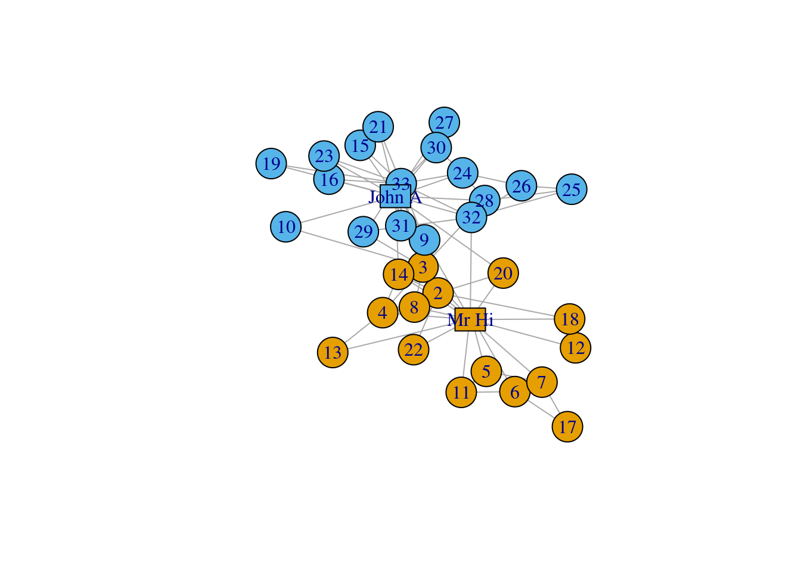

30 igraph in r
Mouwei Lin (lm3756) and Linhao Yu (ly2590)
This will be a very brief introduction about a R package called igraph, which is a complex network analysis tool in R. It will contain commonly used and important functions. We believe if you look at this cheat sheet, you can handle most of the network visualization problems.
30.1 1. igraph Basics
First we download and install the package.
#install.packages('igraph')
library(igraph) #this is a must install package
#install.packages('devtools')
#library(devtools) #this is a must install package
#install_github('kassambara/navdata')
library(navdata) #this is a must install package
#install.packages('tidyverse')
library(tidyverse) #this is a must install package
#install.packages('igraphdata')
library(igraphdata) #this is a must install packageWe will use an open source data set named phone.call from navdata.
## # A tibble: 6 × 3
## source destination n.call
## <chr> <chr> <dbl>
## 1 France Germany 9
## 2 Belgium France 4
## 3 France Spain 3
## 4 France Italy 4
## 5 France Netherlands 2
## 6 France UK 330.1.1 1.1 Create igraph Network Object
igraph has its specific network (graph) object called ‘igraph’. The simplest way to create an ‘igraph’ object is to use graph.formula() and specify every node and edge individually.
graph.formula(A-B-C-D,A-E-F,Z-D-X)## IGRAPH 4392828 UN-- 8 7 --
## + attr: name (v/c)
## + edges from 4392828 (vertex names):
## [1] A--B A--E B--C C--D D--Z D--X E--FBut in real world, we usually have a lot of data. Therefore, it is not a good idea to define every node and edge manually. More generally, we will use these two methods:
# prepare the data
name<-data.frame(c(phone.call$source,phone.call$destination))
nodes<-name%>%
distinct()%>%
mutate(location=c("western","western","central","nordic","southeastern",
"southeastern","southeastern","southern","sourthern",
"western","western","central","central","central","central","central"))
colnames(nodes)<-c("label","location")
edges<-phone.call%>%
rename(from=source,to=destination,weight=n.call)30.1.1.1 (1) build igraph object from dataframe:
graph_from_data_frame() To use this method, we need two dataframes, one is edge frame, the other is vertices frame.
net_pc<-graph_from_data_frame(
d=edges,vertices=nodes,
directed=TRUE)we can see that the graph is created. We can use V() or E() to visit vertices or edges, and as_edgelist(net, names=T), as_adjacency_matrix(net, attr=“weight”) to catch edges list and adjacent matrix:
V(net_pc)## + 16/16 vertices, named, from 6e93970:
## [1] France Belgium Germany Danemark Croatia
## [6] Slovenia Hungary Spain Italy Netherlands
## [11] UK Austria Poland Switzerland Czech republic
## [16] Slovania
V(net_pc)$location## [1] "western" "western" "central" "nordic" "southeastern"
## [6] "southeastern" "southeastern" "southern" "sourthern" "western"
## [11] "western" "central" "central" "central" "central"
## [16] "central"
E(net_pc)## + 18/18 edges from 6e93970 (vertex names):
## [1] France ->Germany Belgium ->France France ->Spain
## [4] France ->Italy France ->Netherlands France ->UK
## [7] Germany ->Austria Germany ->Poland Belgium ->Germany
## [10] Germany ->Switzerland Germany ->Czech republic Germany ->Netherlands
## [13] Danemark->Germany Croatia ->Germany Croatia ->Slovania
## [16] Croatia ->Hungary Slovenia->Germany Hungary ->Slovania
as_edgelist(net_pc, names=T) ## [,1] [,2]
## [1,] "France" "Germany"
## [2,] "Belgium" "France"
## [3,] "France" "Spain"
## [4,] "France" "Italy"
## [5,] "France" "Netherlands"
## [6,] "France" "UK"
## [7,] "Germany" "Austria"
## [8,] "Germany" "Poland"
## [9,] "Belgium" "Germany"
## [10,] "Germany" "Switzerland"
## [11,] "Germany" "Czech republic"
## [12,] "Germany" "Netherlands"
## [13,] "Danemark" "Germany"
## [14,] "Croatia" "Germany"
## [15,] "Croatia" "Slovania"
## [16,] "Croatia" "Hungary"
## [17,] "Slovenia" "Germany"
## [18,] "Hungary" "Slovania"
as_adjacency_matrix(net_pc, attr="weight")## 16 x 16 sparse Matrix of class "dgCMatrix"
##
## France . . 9 . . . . 3 4 2 3 . . . . .
## Belgium 4 . 3 . . . . . . . . . . . . .
## Germany . . . . . . . . . 2 . 2 2 2 2 .
## Danemark . . 2 . . . . . . . . . . . . .
## Croatia . . 2 . . . 2 . . . . . . . . 2.0
## Slovenia . . 2 . . . . . . . . . . . . .
## Hungary . . . . . . . . . . . . . . . 2.5
## Spain . . . . . . . . . . . . . . . .
## Italy . . . . . . . . . . . . . . . .
## Netherlands . . . . . . . . . . . . . . . .
## UK . . . . . . . . . . . . . . . .
## Austria . . . . . . . . . . . . . . . .
## Poland . . . . . . . . . . . . . . . .
## Switzerland . . . . . . . . . . . . . . . .
## Czech republic . . . . . . . . . . . . . . . .
## Slovania . . . . . . . . . . . . . . . .30.1.1.2 (2) build igraph object from adjacent matrix:
graph_from_adjacency_matrix() If the graph is using
adjacent_matrix<-as_adjacency_matrix(net_pc, attr="weight")
net_am<-graph_from_adjacency_matrix(adjacent_matrix)now we simply plot it to take a look
plot(net_pc)
plot(net_am)30.1.2 1.2 Basic igraph Visualization Instructions
The plot function in igraph is very strong and it has a lot of parameters to make the network beautiful and clear. In this section we will only give a general introduction to important visualization methods, we will have a more detailed introduction in the next section.
A large number of parameters are used to display various properties of nodes, edges and graphs. The parameters related to nodes start with vertex.XXX, and the parameters related to edges start with edge.XXX
In addition to specifying the parameters of nodes and edges in plot(), you can also use the previously mentioned V() and E() to add the corresponding properties directly into the igraph object. The difference between the two methods is that the parameters specified in plot() do not change the properties of the plot. For example, we first specify the color of the node according to the position, and the width of the edge according to the weight (these two attributes will be saved in the net_pc object), and then specify the size of the node in the parameters of plot() (proportional to the degree of the node, The node degree is the number of edges connected to this node), the size and position of the node marker, the color of the edge, the size of the arrow, and the degree of curvature of the edge.
# Calculate node's degree
deg<-degree(net_pc,mode="all")
# Set up the color
vcolor<-c("orange","red","lightblue","tomato","yellow")
# Set specific node's Color
V(net_pc)$color<-vcolor[factor(V(net_pc)$location)]
# Set specific edge's weight
E(net_pc)$width<-E(net_pc)$weight/2
# Set up vertex.size, vertex.label.cex & dist, edge color & arrow size & curve in graph
plot(net_pc,vertex.size=3*deg,
vertex.label.cex=.7,vertex.label.dist=1,
edge.color="gray50",edge.arrow.size=.4, edge.curved=.1)
# Add legend
legend(x=-1.5,y=1.5,levels(factor(V(net_pc)$location)),pch=21,col="#777777",pt.bg=vcolor)30.1.3 1.3 Network Layout
Network layout refers to the method of determining the coordinates of each node in the network.
A variety of layout algorithms are provided in igraph. Among them, Force-directed layout algorithms are the most useful. Force-directed layouts try to get an aesthetically pleasing graph where the edges are similar in length and cross as little as possible. They model graphics as a physical system. Nodes are “charged particles” that repel each other when they get too close. These edges act as springs, attracting connected nodes together. As a result, nodes are evenly distributed in the illustrated area, and the layout is intuitive as nodes that share more connections are closer to each other. The disadvantage of these algorithms is that they are slow and therefore less frequently used in graphs larger than 1000 vertices.
When using force-directed layout, you can use the niter parameter to control the number of iterations to perform. The default setting is 500 iterations. For large graphs, you can lower this number to get results faster and check that they are reasonable.
Fruchterman-Reingold is the most widely used Force-directed layout method:
# Fruchterman-Reingold layout method
l <- layout_with_fr(net_pc)
plot(net_pc, layout=l)The Fruchterman Reingold layout is random and different every run will result in slightly different layout configurations. Saving the layout in the object l allows us to obtain the exact same result multiple times (it is also possible to specify a random state by setting seed seed())
# All the layout methods in igraph
layouts <- grep("^layout_", ls("package:igraph"), value=TRUE)[-1]
layouts## [1] "layout_as_bipartite" "layout_as_star" "layout_as_tree"
## [4] "layout_components" "layout_in_circle" "layout_nicely"
## [7] "layout_on_grid" "layout_on_sphere" "layout_randomly"
## [10] "layout_with_dh" "layout_with_drl" "layout_with_fr"
## [13] "layout_with_gem" "layout_with_graphopt" "layout_with_kk"
## [16] "layout_with_lgl" "layout_with_mds" "layout_with_sugiyama"There are 18 methods of layout in igraph, we won’t go into detail for each layout method because most of them are not widely used except Fruchterman Reingold layout. However, we will give an example to show how those layouts look like:
layouts <- grep("^layout_", ls("package:igraph"), value=TRUE)[-1]
# Remove layouts that do not apply to our graph.
layouts <- layouts[!grepl("bipartite|merge|norm|sugiyama|tree", layouts)]
par(mfrow=c(5,3), mar=c(1,1,1,1))
for (layout in layouts) {
print(layout)
l <- do.call(layout, list(net_pc))
plot(net_pc, vertex.label="",edge.arrow.mode=0,
layout=l,main=layout) }## [1] "layout_as_star"## [1] "layout_components"## [1] "layout_in_circle"## [1] "layout_nicely"## [1] "layout_on_grid"## [1] "layout_on_sphere"## [1] "layout_randomly"## [1] "layout_with_dh"## [1] "layout_with_drl"## [1] "layout_with_fr"## [1] "layout_with_gem"## [1] "layout_with_graphopt"## [1] "layout_with_kk"## [1] "layout_with_lgl"## [1] "layout_with_mds"30.1.5 2.1 Details for decorating igraph visualization
In this section, we still use the example above, but we customize several parameters to see their influence for visualization.
First, we customize the nodes parameters.
set.seed(111)
l <- layout_with_fr(net_pc)
plot(net_pc,
vertex.color = 'pink', # The color of nodes
vertex.frame.color = 'lightblue', # The color of node frames
vertex.shape = c('circle','rectangle'), # The color of node shapes
vertex.size = 25, # The size of a node
vertex.size2 = 15, # For rectangle, we need two parameters to specify its shape
layout = l)
plot(net_pc,
vertex.color = 'pink',
vertex.frame.color = 'lightblue',
vertex.shape = c('circle','rectangle'),
vertex.size = 25,
vertex.size2 = 15,
vertex.label = 1:length(V(net_pc)), # Change labels to numbers
vertex.label.family = 'Helvetica', # Change the font family of labels
vertex.label.font = 3, # Change the font to italic
vertex.label.cex = 0.8, # Change the size of labels
vertex.label.dist = 0.5, # Change the distance between labels and node frames
layout = l)
plot(net_pc,
vertex.color = 'pink',
vertex.frame.color = 'lightblue',
vertex.shape = c('circle','rectangle'),
vertex.size = 25,
vertex.size2 = 15,
vertex.label = 1:length(V(net_pc)),
vertex.label.family = 'Helvetica',
vertex.label.font = 3,
vertex.label.cex = 0.8,
vertex.label.dist = 0.5,
edge.color = 'lightblue', # Color of edges
edge.width = 3, # Width of edges
edge.arrow.size = 0.8, # Size of arrows
edge.arrow.width = 0.8, # Width of arrows
edge.lty = 4, # Line types of edges (4: dot dash)
edge.curved = 0.5, # Curvature of edges
layout = l)30.1.6 2.2 Example for advanced igraph visualization
In this section, we introduce an advanced network visualization using Zachary’s karate club network dataset. This is a widely-used dataset for network analysis. In this dataset, every node represents a member of the karate club and edges represent members’ social connection. During Zachary’s study, the administrator “John. A.” and the coach “Mr. Hi” had a conflict which led to a split of the club. Now, we want to use igraph to visualize the social network of this karate club.
First, we plot the network without further decoration.
set.seed(111)
data(karate)
l <- layout_with_fr(karate)
igraph.options(vertex.size = 10)
par(mfrow = c(1,1))
plot(karate,
layout = l)Next, we highlight the two leaders (“John. A.” and “Mr. Hi”) in the network by using rectangles.
# Decoration
V(karate)$label <- sub("Actor ","", V(karate)$name)
# Two leaders get shapes different from club members
V(karate)$shape <- "circle"
V(karate)[c("Mr Hi", "John A")]$shape <- "rectangle"
V(karate)$size <- 20
V(karate)$size2 <- 15
plot(karate,
vertex.label = V(karate)$label,
layout = l)
Finally, we divide the edges into three categories and use different colors for them. Remember the karate club is split into two factions, so the edges can be divided into: edges inside faction 1, edges inside faction 2, and edges connecting both factions.
Besides, we also set up the edge width according to its weight.
# Define factions
F1<-V(karate)[Faction==1]
F2<-V(karate)[Faction==2]
# Set up edge colors according to factions
E(karate)[F1 %--% F1]$color<-"darkgoldenrod2"
E(karate)[F2 %--% F2]$color<-"lightblue"
E(karate)[F1 %--% F2]$color<-"brown"
# Set up edge width according to weights
E(karate)$width=E(karate)$weight
# Plot the decorated graph, using same layout.
plot(karate,layout=l)